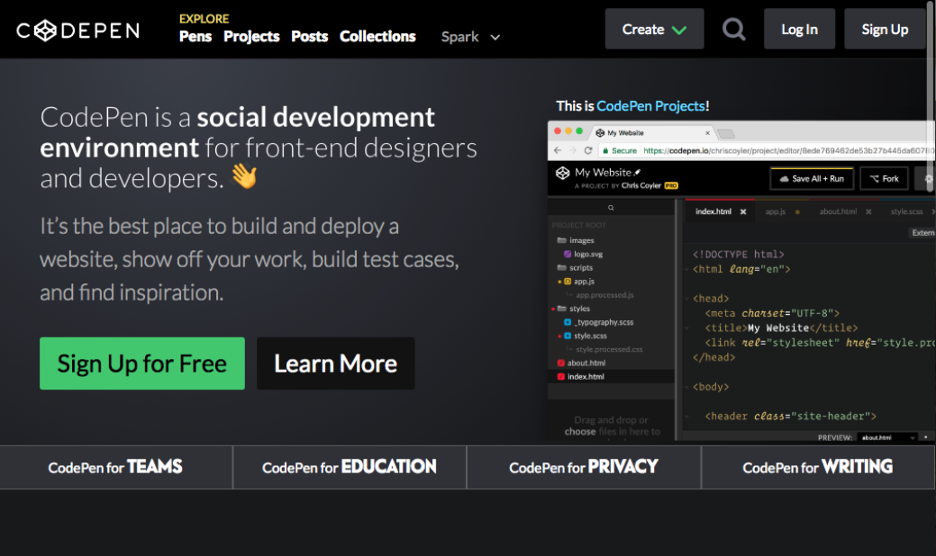
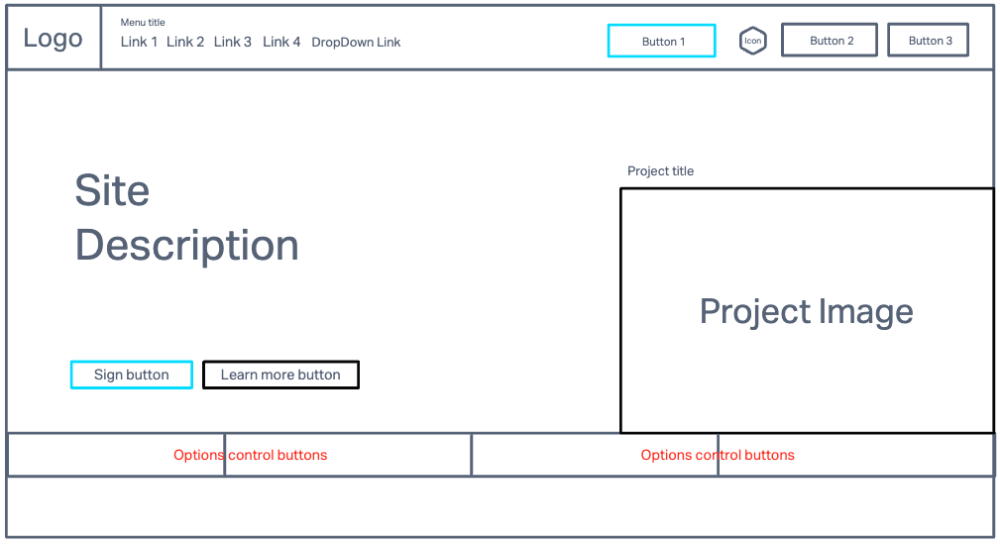
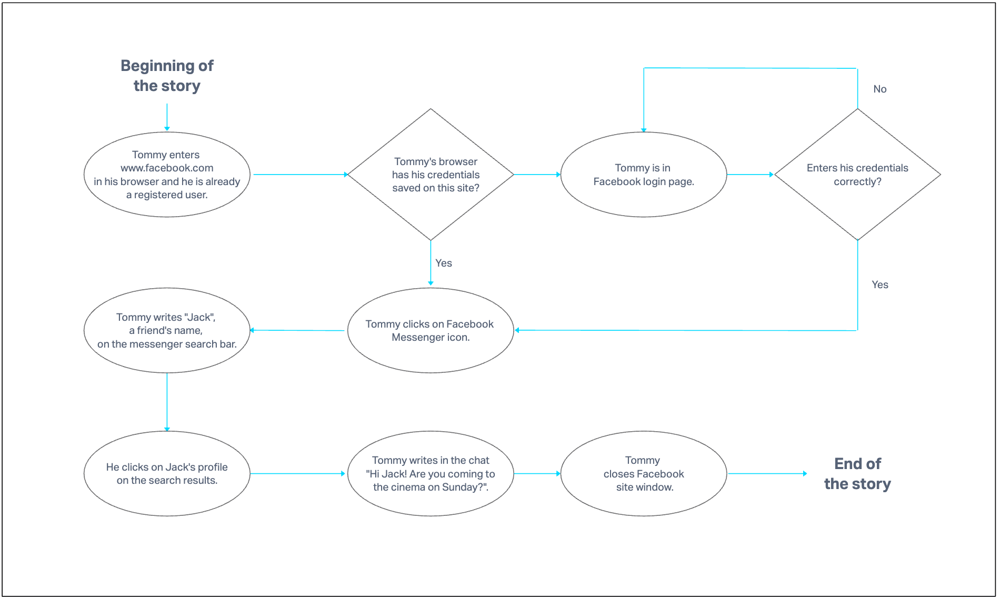

M1C2 UI/UX Assignment
Task One: Referencing this image, create a low-fidelity wireframe.

Solution to Task One: Low-fidelity wireframe made with InvisionApp.

Task Two: Use one of the following websites and the inspect tool to identify 2-3 colors used repeatedly as part of the site’s color scheme. Remember that different shades of gray and black can be included as a color.
Solution to Task Two: Browser inspect tool used to identify site's colors.
Timmyomahony.com
#F0F0E8 - body background-color.
#72645C - link text color.
#000000: text color headings and paragraphs.
Sebkay.com
#333333: paragraph text color.
#5E5E5E: link text color.
#191A1E: heading text color.
Task Three: Create a user story by referencing one of these websites.
Solution to Task Three: Tommy's Facebook story.

Task Four: Identify the prime objective of Facebook, Twitter, Google, and Youtube.
Solution to Task Four:
Facebook - Connect, be in touch with your friends and create communities no matter where you are.
Youtube - Show content and provide a platform to share information by video worldwide.
Twitter - Share information and opinions with others.
Google - To be the main worldwide website to provide relevant information concerning all topics.